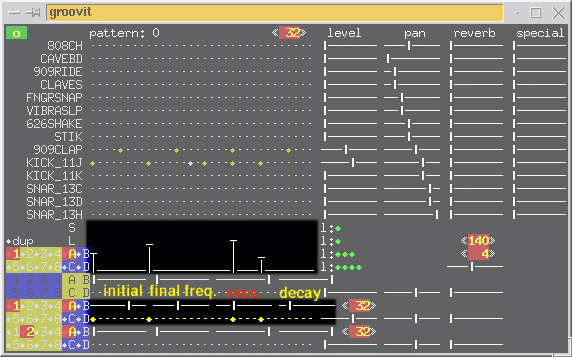

|
The analog voices. | |||||||||
| This part is used to create patterns or loops consisting of individualy pitched notes that are synthesised simulating a simple analog synth. | ||||||||||
| Each starting point can have its pitch intensity set with the levels editor (this should be changed in a near future by a score editor) in the corresponding row (the levels editor always corresponds to the highlighted line). | ||||||||||
| Below you can see the analog voices with first set for a simple bass line with the corresponding pitches set in the levels editor : | ||||||||||
|  | ||||||||||
|
Each voice has four buttons to tune your sound synthesis. From left to right you have : | ||||||||||
| The initial cutoff frequency. This sets the frequency used by the filter just after the begining of the note. The cutoff frequency will then glide more or less quickly to the final cutoff frequency. | ||||||||||
| The final cutoff frequency. This button sets the cutoff frequency of the filter at the ending of the note. | ||||||||||
The resonance. This sets the ability of the resonator filter to keep oscillating
after beeing excited by the initial sound.
| |
WARNING ! When
set to Zero (turned to the left), this parameter can
produce very high gain from the original sound !
| | |
The decay. This sets the time length with which the sound will decay and also
regulate the gliding speed from the initial cutoff frequency to the final
cutoff frequency.
| | | Next :
The dynamic filter. |
 |